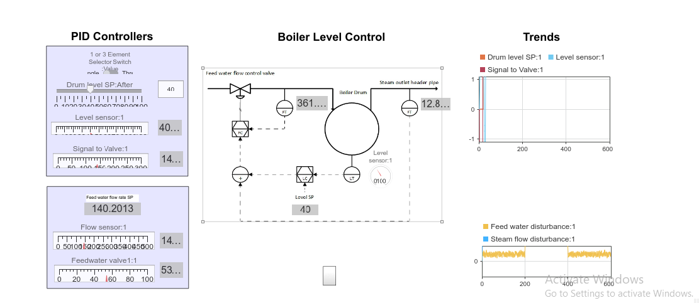
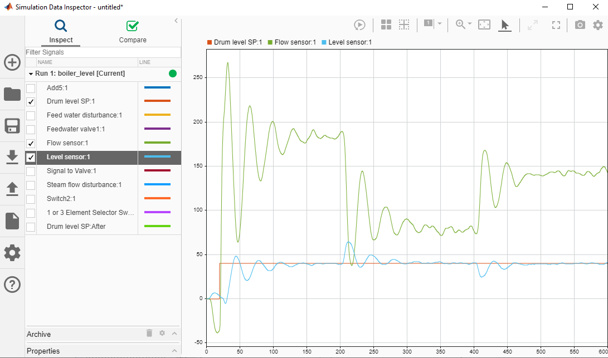
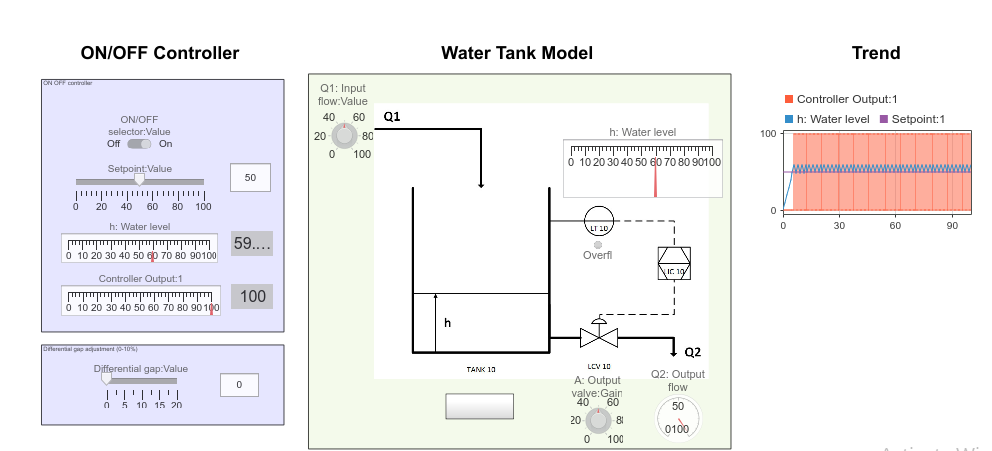
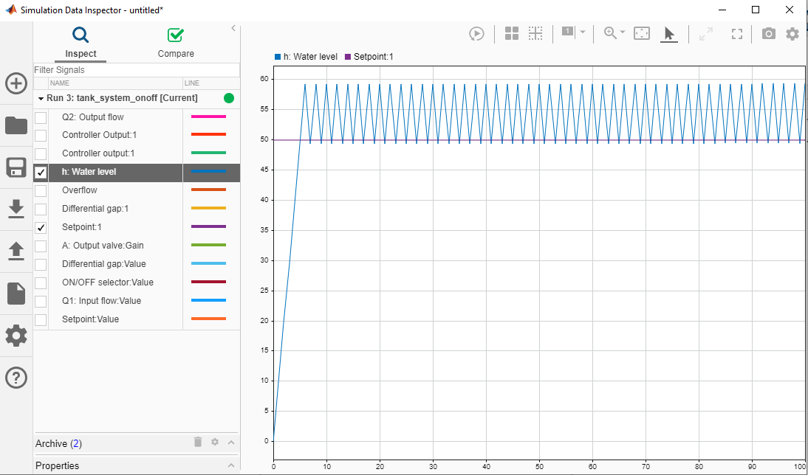
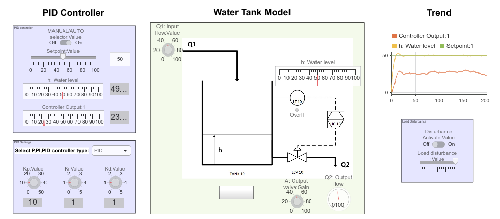
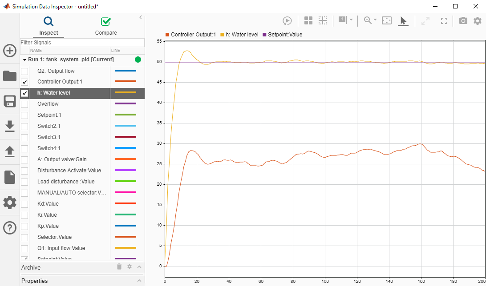

Boiler Level Control System
Boiler Level Control system using PID controllers to maintain the Setpoint at 40. The system consists of a feedwater flow rate controlled by the LCV. The flow transmitter (FT) measures inlet flow rate. At the outlet the steam produced is measured by an additional FT summed to the Flow Controller (FC). The Boiler level is measured by the Level transmitter (LT) connected to the Level Controller (LC) and summed to the FC as well.
 On Off Tank Level Control
Tank Level Control using simple On Off Control Technique. The controller switches the Level Control Valve (LCV) On and Off to maintain the desired setpoint at 50 within the tank. The system is fast acting and initiates constant action on the Final Control Element (FCE). This control technique is simple but not recommended due to poor control precision and increased wear and tear on the FCE.
 PID Tank Level Control
Tank level control using a PID controller. The PID controller is tuned to attain the proportional gain (Kp) value as 10, the Integral gain (Ki) value as 1 and the Derivative gain (Kd) value as 1. This control technique offers greater precision with less overshoot and a reduced time to reach steady-state. The controller output (CO) indicates a gradual increase or decrease which reduces wear and tear on the FCE. The addition of a filter would improve the CO thus further reducing wear and tear on the FCE.
 